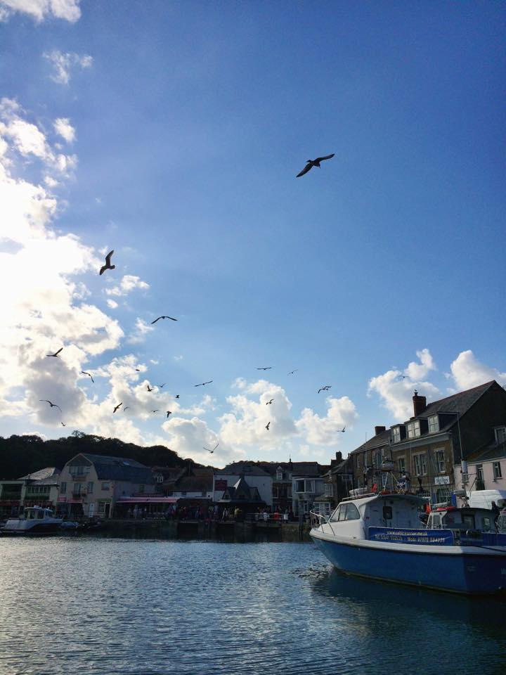

03 / 07 / 2018
I'm writing this in July 2018, but it's been more than three years since I first went to Cornwall.
I visited Padstow with my boyfriend and his mum and step-dad.
Fish & chips from Rick Stein's, a dish which was still fairly new to me at this point. If you'd asked me back then I'd say it's a strange combo, but I've come to really like it now that I've spent almost 5 years in the UK. With extra salt and vinegar, please!
I needed to guard my food carefully though, as there were many hungry seagulls about.
Port Isaac, the epitome of an English fisherman's village, and where we stayed during our time in Cornwall.
The village is charming and picturesque, my favourite place in Cornwall. And yes, I have been back since. It's quaint, small, cute, next to the sea, tiny pubs with open fireplaces and restaurants sat in buildings so small Jamie needed to walk in a right angle to get through the door.
Speaking of, if you come here make sure you visit Outlaw's. The resturant holds only eight tables but in my opinion, the more charming it is. Me and Jamie were treated to an eight course meal, each dish containing seafood. It was divine.
A rainbow appeared during our coastal walk.
Ingrid x